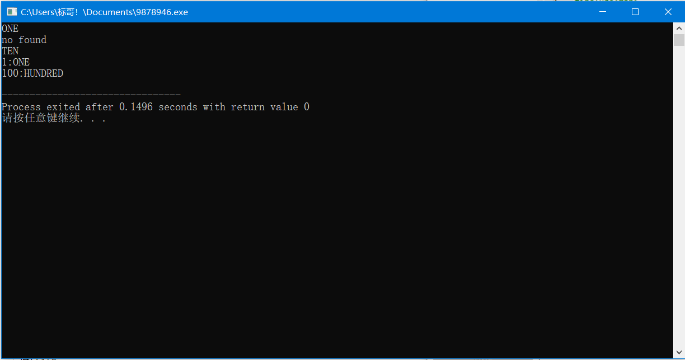

set容器中一些函数，取自百度其他大佬已总结好的，如有侵权，请联系删除！
set的各成员函数列表如下:
c++ stl容器set成员函数:begin()--返回指向第一个元素的迭代器
c++ stl容器set成员函数:clear()--清除所有元素
c++ stl容器set成员函数:count()--返回某个值元素的个数
c++ stl容器set成员函数:empty()--如果集合为空，返回true
c++ stl容器set成员函数:end()--返回指向最后一个元素的迭代器
c++ stl容器set成员函数:equal_range()--返回集合中与给定值相等的上下限的两个迭代器
c++ stl容器set成员函数:erase()--删除集合中的元素
c++ stl容器set成员函数:find()--返回一个指向被查找到元素的迭代器
c++ stl容器set成员函数:get_allocator()--返回集合的分配器
c++ stl容器set成员函数:insert()--在集合中插入元素
c++ stl容器set成员函数:lower_bound()--返回指向大于（或等于）某值的第一个元素的迭代器
c++ stl容器set成员函数:key_comp()--返回一个用于元素间值比较的函数
c++ stl容器set成员函数:max_size()--返回集合能容纳的元素的最大限值
c++ stl容器set成员函数:rbegin()--返回指向集合中最后一个元素的反向迭代器
c++ stl容器set成员函数:rend()--返回指向集合中第一个元素的反向迭代器
c++ stl容器set成员函数:size()--集合中元素的数目
c++ stl容器set成员函数:swap()--交换两个集合变量
c++ stl容器set成员函数:upper_bound()--返回大于某个值元素的迭代器
c++ stl容器set成员函数:value_comp()--返回一个用于比较元素间的值的函数
1 #include<iostream>
2 #include<set>
3 using namespace std;
4
5 int main()
6 {
7 set<int>s;//定义整形set容器变量s
8 //插入操作
9 s.insert(1);//insert插入函数
10 s.insert(3);
11 s.insert(5);
12 set<int>::iterator ite;//声明set容器指针变量ite
13 //查找操作
14 ite = s.find(1);//find查找函数
15 if(ite == s.end())//对指针变量进行判断，看指针是否指向容器最后一个元素
16 cout << "no found" << endl;
17 else
18 cout << "found" << endl;
19
20 ite = s.find(2);
21 if(ite == s.end())
22 cout << "no found" << endl;
23 else
24 cout << "found" << endl;
25 //删除操作
26 s.erase(3);//容器set删除指定元素操作，erase删除函数
27 //对删除后的元素进行依次查找操作
28 if(s.count(3) != 0)
29 cout << "found" << endl;
30 else
31 cout << "no found" << endl;
32 //遍历容器操作
33 for(ite = s.begin();ite != s.end();ite++)//begin函数指向容器第一个元素，进行一个for循环
34 cout << *ite << "P" << endl;//遍历输出
35 return 0;
36 }运行结果：
以下为map容器的简单应用
begin() 返回指向 map 头部的迭代器
clear(） 删除所有元素
count() 返回指定元素出现的次数
empty() 如果 map 为空则返回 true
end() 返回指向 map 末尾的迭代器
erase() 删除一个元素
find() 查找一个元素
insert() 插入元素
key_comp() 返回比较元素 key 的函数
lower_bound() 返回键值>=给定元素的第一个位置
max_size() 返回可以容纳的最大元素个数
rbegin() 返回一个指向 map 尾部的逆向迭代器
rend() 返回一个指向 map 头部的逆向迭代器
size() 返回 map 中元素的个数
swap() 交换两个 map
upper_bound() 返回键值>给定元素的第一个位置
value_comp() 返回比较元素 value 的函数
以下map容器的简单应用有使用到make_pair函数，即需要返回两个值时的函数，具体请上网取了解，这里不给予过多的赘述。
#include<iostream> #include<map> using namespace std; int main() { //声明(int为键，const char*为值) map<int,const char*>m; //插入元素，使用insert函数 m.insert(make_pair(1,"ONE")); m.insert(make_pair(10,"TEN")); m[100] = "HUNDRED"; //查找元素 map<int,const char*>::iterator ite; ite = m.find(1); cout << ite->second << endl; ite = m.find(2); if(ite == m.end()) cout << "no found" << endl; else cout << ite->second << endl; cout << m[10] << endl; //删除元素 m.erase(10); //遍历一遍所有元素并输出 for(ite = m.begin();ite != m.end();ite++) cout << ite->first << ":" << ite->second << endl; return 0; }
运行结果：